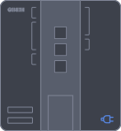
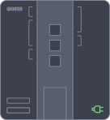
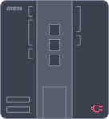

AltaIDE / Компоненты
PLK
Индикатор состояния контроллера.
Состояния
| no connection | Loading | succeess | error |
|---|---|---|---|
 |  |  |
Индикатор состояния контроллера.
| no connection | Loading | succeess | error |
|---|---|---|---|
 |  |  |